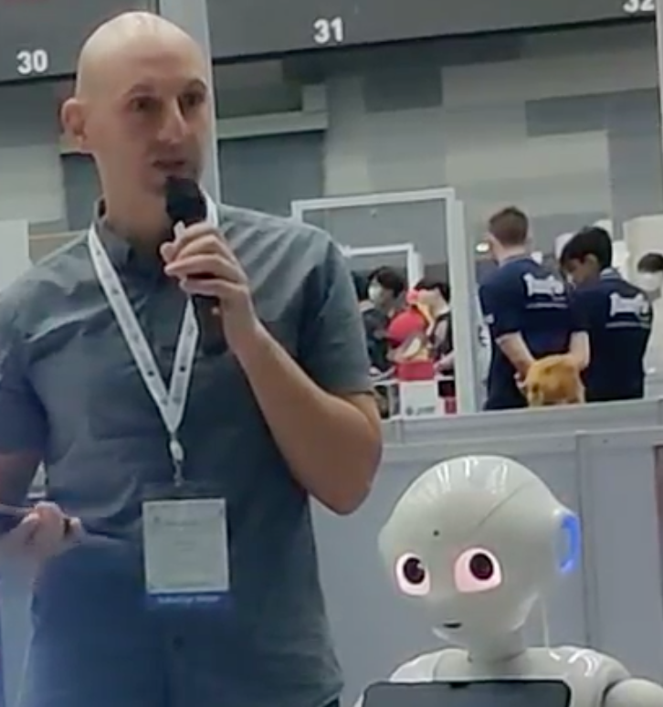

Personal site
Cédric Buche
Positions

Current
Professor, École nationale supérieure Mines-Télécom (IMT Atlantique), France.
Director, IRL CNRS CROSSING, Australia.
Honorary
Adjunct Professor, Adelaide University, Australia.
Adjunct Professor, Flinders University, Australia.
Past
R&D Director, Naval Group (Pacific region).
Timeline
Director
IRL CNRS CROSSING, Adelaide, Australia
On CNRS delegation, directing the international research laboratory jointly established by the University of Adelaide, Naval Group and CNRS.
CurrentAdjunct Professor · University of Adelaide
Adjunct Professor · Flinders University
Professor
IMT Atlantique, France
Full professorship (CNU section 27), leading research across artificial intelligence, virtual reality, machine learning and robotics.
R&D Director
Naval Group, Pacific region
Led R&D for Naval Group's Pacific operations, one of the CROSSING lab's three founding partners.
Professor
ENIB, France
Full professorship (CNU section 27), leading research across artificial intelligence, virtual reality, machine learning and robotics.
Visiting Professor (concurrent)
University of Miami, USA
Visiting professorship supporting a long-running research collaboration on robotics and machine learning.
Teaching & Research Fellow (ATER)
ENIB, then Université de Bretagne Occidentale
Two years as a full-time teaching and research fellow before securing a permanent faculty position.
PhD Candidate
CERV · Université de Bretagne Occidentale
Doctoral research on intelligent tutoring systems and artificial intelligence to support human learners in virtual training environments.
Engineer
École Nationale d'Ingénieurs de Brest (ENIB)
Graduated as an engineer; completed a dual-degree track alongside a DEA (postgraduate diploma) in Computer Science at Université de Rennes I.